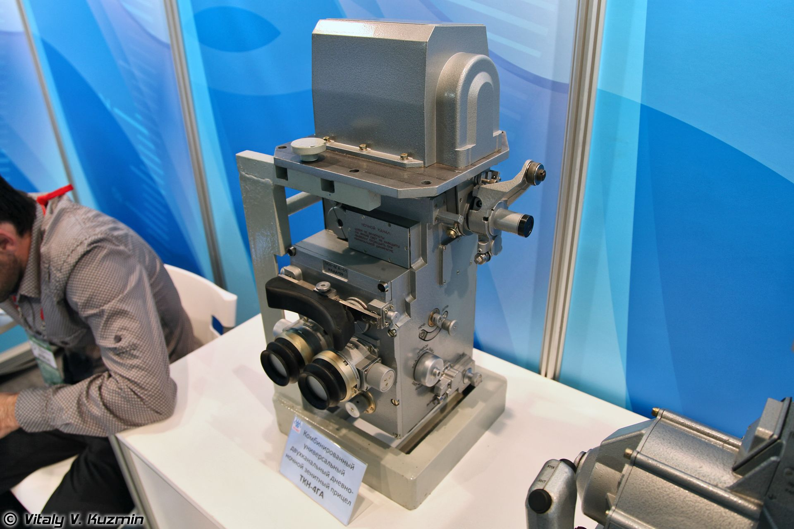
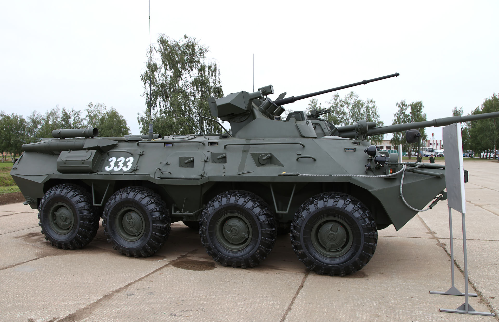

БТР-82
БТР-82 - российский бронетранспортёр, представляющий собой глубокую модернизацию БТР-80. Принят на вооружение ВС России в 2013 году.
История
Опытные образцы БТР-82 и БТР-82А были собраны в декабре 2009 года на Арзамасском машиностроительном заводе (АМЗ). Испытания машин прошли зимой 2010 года, после чего они были приняты на вооружение. В 2011 году на БТР-82А были перевооружены некоторые части Южного военного округа.
Вооружённые силы Казахстана приняли на вооружение БТР-82А раньше, чем ВС России, по контракту заключённому в 2010 году, согласно которому поставки начались в 2012 году.
После завершения испытаний в 2013 году приказом министра обороны С. К. Шойгу БТР-82 был принят на вооружение Российской армии.
Конструкция
Броневой корпус и башня
{kind=link}
На машине установлен 8-цилиндровый 4-тактный V-образный дизельный двигатель КАМАЗ-740.14‑300 мощностью 300 л. с.
Конструкция башни — это унифицированный модуль, оснащённый системой стабилизации вооружения в двух плоскостях и электрическими приводами. Вооружение представлено 14,5-мм пулемётом КПВТ (для БТР-82) или скорострельной 30-мм пушкой 2A72 (для БТР-82А), спаренные с 7,62-мм пулемётом ПКТМ в модуле башенной пушечно-пулемётной установки (БППУ). Спаренное вооружение снабжено электроприводом и цифровым двухплоскостным стабилизатором, комбинированным всесуточным прицелом наводчика ТКН-4ГА с дневным и ночным каналами, со стабилизированным полем зрения и каналом управления дистанционным подрывом снаряда. На модификации прицела ТКН-4ГА-03 ночной канал заменён тепловизионным.
Повышена живучесть, проходимость, надёжность и ресурс эксплуатации по сравнению с БТР-80. Имеется противоосколочная защита в виде специальных накладок на внутренней поверхности корпуса и кондиционер. Бронетранспортёр получил цифровые радиостанции Акведук с шифрованием сигнала и комбинированные приборы наблюдения. Повышена противоминная стойкость.
С наличием системы стабилизации орудия появилась возможность эффективной стрельбы в движении и ночью. На внутренних поверхностях корпуса смонтирована противоосколочная защита. Штатное место оператора на БТР-82А переместилось из башни в обитаемое отделение. С целью ослабить воздействие от мин, все сиденья установлены на крепления поглощающие удар. Машина оснащена новой улучшенной системой пожаротушения.
{kind=link}
Подвижность
Дизельный двигатель УТД-29 имеет малую высоту; для выхода десанта, размещаемого в средней части корпуса, используется специальный проход над двигателем. БМП-3 плавает со скоростью 10 км/ч, установлены водомёты внутри корпуса. Машина способна преодолевать стенку высотой 0,7 м, подъём 30° и крен 25°. Натяжение гусениц управляется с места механика-водителя.
Транспортабельность: железнодорожным, автомобильным, воздушным и морским транспортом.
Плавать может с минимальной подготовкой, есть функция заднего хода для плавания, есть помпа для откачки воды. Все 6 опорных катков с каждого борта — с гидроамортизаторами.
Модификации
{kind=link}
- БТР-82А — модификация с 30-мм пушкой 2А72 в модуле БППУ.
- БТР-82А1 (БТР-88) — модернизированный БТР-82, оснащённый дистанционно управляемым боевым модулем разработки ЦНИИ «Буревестник» с 30-мм автоматической пушкой и 7,62-мм пулемётом.
- БТР-82АМ — БТР-80 модернизированный до уровня БТР-82А. Модернизация производится в ходе капитального ремонта на ремонтных предприятиях.
- БТР-82АТ — модификация с комплектом дополнительных экранов и решёток, комбинированным двухканальным прицелом и ПТРК «Корнет» в десантном отделении.
- БТР-82В — вариант для Росгвардии с боевым модулем от БТР-80.
- БТР-87 — глубокая модернизация БТР-82А, имеет полностью новый бронекорпус с передним расположением моторно-трансмиссионного отделения и задним расположением отделения для десантников. Разработан ООО «Военно-промышленная компания» (Группа ГАЗ) и в основном предназначен для экспорта. Впервые был показан в июне 2015 года на международном военно-техническом форуме «Армия-2015» в парке Патриот Кубинке.
{kind=link}
{kind=link}